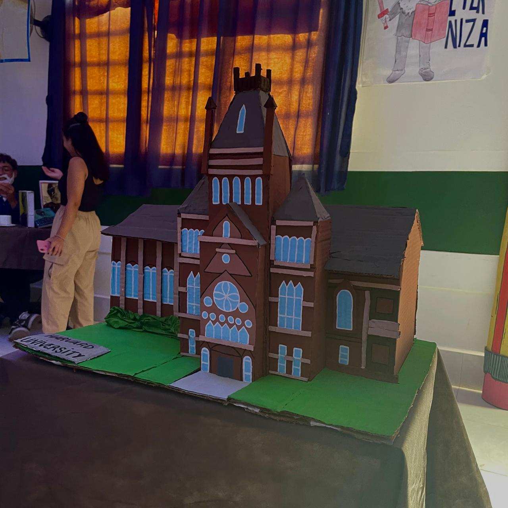
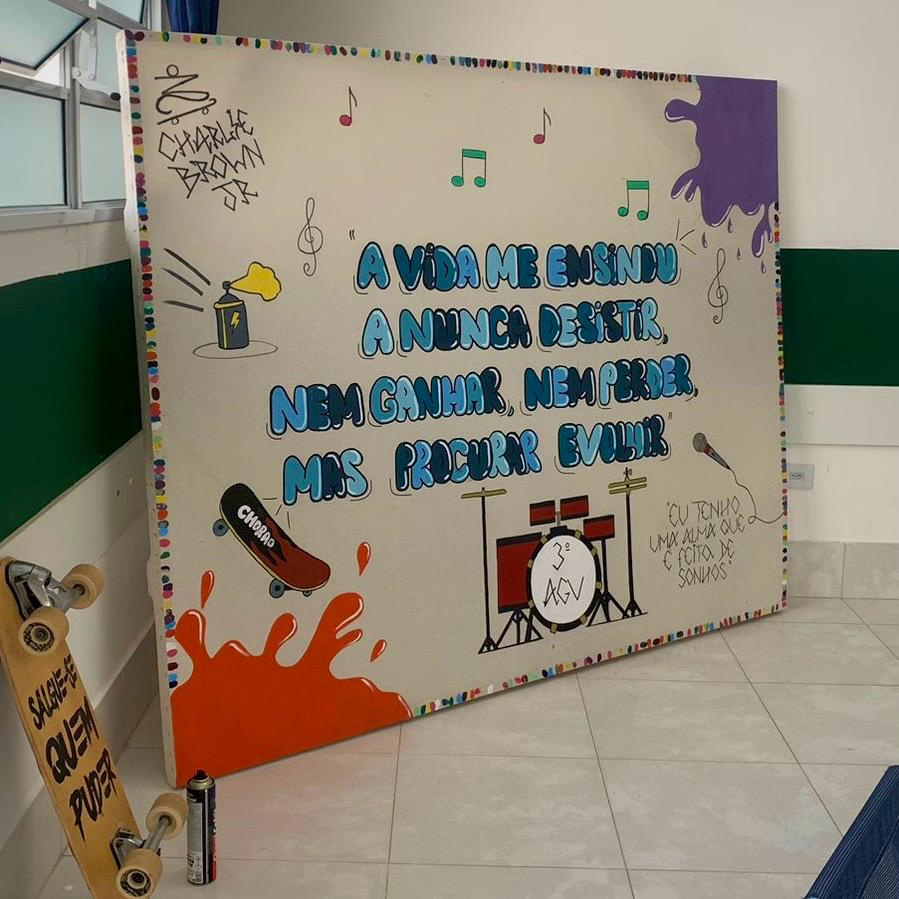

22.12.39_ae84bdc0.jpg)

📅 Categorias de Eventos
"Conheça os principais tipos de eventos que realizamos na ETEC!"

✨ Visão Geral dos Eventos da ETEC
Nossa escola promove uma variedade de eventos ao longo do ano letivo, buscando enriquecer a experiência educacional dos alunos e integrar a comunidade. Desde atividades acadêmicas e culturais até competições esportivas e visitas técnicas, há sempre algo acontecendo na ETEC Verdescola.
Explore as abas acima para conhecer mais sobre cada tipo de evento e o que eles oferecem!

📚 Semana Paulo Freire
A Semana Paulo Freire é um período dedicado à reflexão e ao aprofundamento dos princípios da pedagogia libertadora de Paulo Freire. Através de palestras, mesas-redondas, oficinas e atividades culturais, buscamos promover o pensamento crítico, a autonomia e o engajamento social dos nossos estudantes.
Este evento é fundamental para fortalecer a educação como ferramenta de transformação e cidadania.

💻 Semana Tecnológica
A Semana Tecnológica é o nosso principal evento de inovação, onde apresentamos as últimas tendências em tecnologia e os projetos mais criativos desenvolvidos pelos alunos. Com workshops práticos, demonstrações e palestras com especialistas, incentivamos a curiosidade e o desenvolvimento de soluções inovadoras para os desafios do futuro.
É uma oportunidade única para os estudantes mostrarem seu potencial e se conectarem com o mercado de trabalho.
🏭 Visitas Técnicas
As Visitas Técnicas são uma extensão da sala de aula, proporcionando aos alunos a oportunidade de conhecer de perto o funcionamento de empresas, indústrias e instituições relevantes para seus cursos. Essa experiência prática complementa o aprendizado teórico, permitindo que os estudantes visualizem a aplicação do conhecimento e as rotinas profissionais.
É um momento de grande aprendizado e inspiração para a futura carreira.

⚽ Interclasse
O Interclasse é a nossa tradicional competição esportiva e cultural que promove a integração entre as turmas e o desenvolvimento do espírito esportivo. Com diversas modalidades, desde futebol e vôlei até apresentações artísticas, o evento celebra o talento e a união dos nossos estudantes.
É um momento de diversão, competição saudável e construção de memórias inesquecíveis.